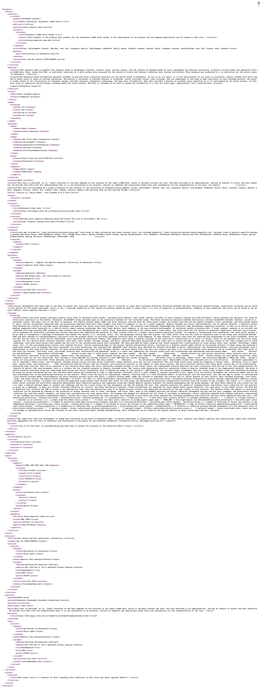

The CIC Geospatial Data Discovery Project
Harmonizing Geometadata for Greater Discoverability
Kevin Dyke, University of Minnesota Libraries
@kr_dyke
dykex005@umn.edu
outline
- Quick review of geometadata
- Background of CIC project
- So far
- Current work
- Future
What is geometadata?
- In most ways, it’s the same as any other sort of metadata.
- It gets complicated when you ask, quite literally, “where on earth is this?”
What does it look like?
Dublin Core

FGDC CSDGM
ISO 19139

To accomodate increased complexity of data (where it lives, how users interact with it), the metadata standards we use for geometdata have become more complicated.
That's where we come in.
background
- CIC => Committee on Institutional Cooperation
- Big Ten + University of Chicago
background
- Started - July 2015
- Participating institutions: Illinois, Iowa, Maryland, Michigan, Michigan State, Minnesota (host), Penn State, Purdue, and Wisconsin
background
project goals
- Data discovery portal
- Geometadata creation/transformation/remediation
- Reusable tools and workflows
background
what we've done so far
- Hired a full-time Metadata Coordinator (Karen Majewicz)
- Chose a geometadata standard (ISO 19115/19139)
- Chose a discovery platform (GeoBlacklight)